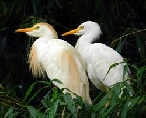

Garça boiadeira
Nome científico:(Bubulcus ibis Linnaeus, 1758)
Nome comum: Garça boiadeira
Classificação biológica:
Domínio: Eukaryota.
Reino: Animalia.
Filo: Chordata.
Classe: Aves.
Ordem: Pelecaniformes.
Família: Ardeidae.
Gênero: Bubulcus.
Espécie: Bubulcus ibis.
Nutrição:Carnívora.
Hábitos alimentares:A garça-boiadeira se alimenta principalmente de pequenos animais, como insetos, peixes, anfíbios, pequenos mamíferos e até caranguejos. É comum vê-la associada a grandes herbívoros, como bois e cavalos, aproveitando a movimentação desses animais para caçar insetos espantados pelo pastoreio.
Morfologia do corpo:Ave de porte médio, com cerca de 45 a 52 cm de comprimento. Possui bico curto e grosso e pernas relativamente curtas em comparação com outras garças. Durante a época reprodutiva, apresenta penas ornamentais no dorso, peito e cabeça.
Comportamento:A garça-boiadeira é uma ave gregária, frequentemente vista em pastagens e áreas agrícolas, seguindo o gado para capturar insetos. Ela é ativa durante o dia e descansa em árvores ou arbustos à noite. Durante a reprodução, constrói ninhos em colônias perto de corpos d'água.
Principais Presas:Insetos como gafanhotos e grilos, peixes pequenos, anfíbios (como sapos e rãs), pequenos roedores, além de caranguejos e outros pequenos invertebrados.
Principais Predadores:Aves de rapina, incluindo gaviões e águias, além de mamíferos carnívoros, como raposas e pequenos felinos. Esses predadores podem atacar tanto os adultos quanto os filhotes e ovos nos ninhos.
Locais habitados
Distribuição:Encontrada em Todos os Biomas do Brasil
Habitat:A Garça boiadeira prefere áreas abertas e úmidas, como pastagens, campos agrícolas e margens de rios. Ela se alimenta de insetos e pequenos invertebrados que são assustados pelo movimento de animais grandes, como o gado.
Reprodução:Reproduz-se em colônias, geralmente perto de corpos d'água. O ninho é construído em árvores ou arbustos, utilizando galhos e vegetação. A fêmea põe de 3 a 5 ovos, que são incubados por cerca de 23 dias. Ambos os pais se revezam na incubação e alimentação dos filhotes, que deixam o ninho em torno de 30 dias após a eclosão.